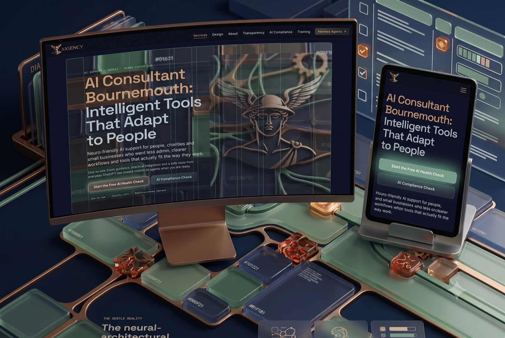
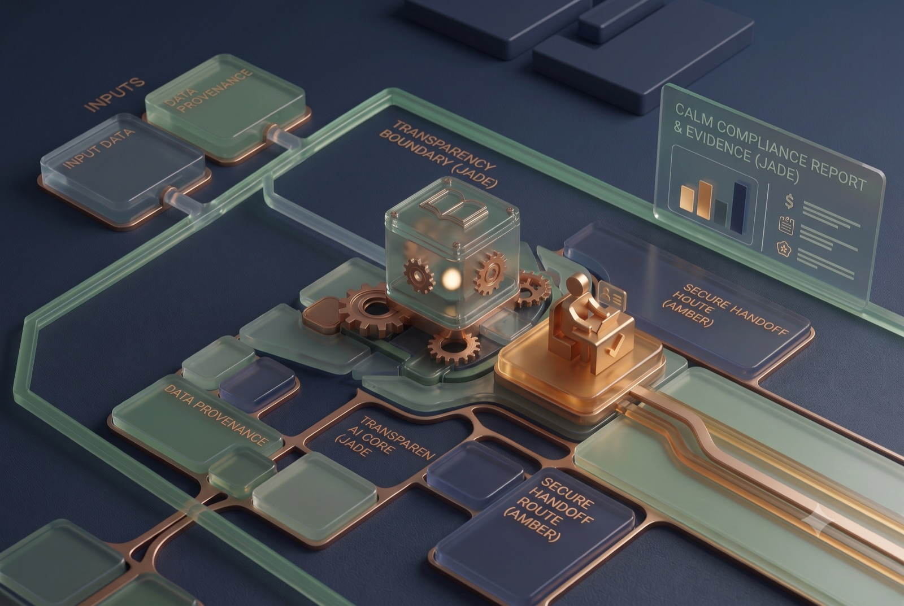

AI · DESIGN · VISIBILITY · RESPONSIBILITY
Practical AI, Design & Digital Systems for Real Businesses
Human-centred AI support, digital design, search visibility and responsible systems — with a clear route into Hermes Agents when your business is ready.
FROM FIRST QUESTION TO WORKING SYSTEM
Start with the work. Add only what helps.
We find the friction, keep judgement visible, then design or automate the part that is safe, useful and understandable.
- 01UNDERSTANDFind the useful starting pointMap the work, the pressure and the opportunity before buying another tool.
- 02DESIGNMake the next step clearShape the website, interface or workflow around real people.
- 03CONNECTImprove how information movesUse automation, search structure and human approval points where they matter.
- 04EXTENDLet Hermes carry the repeatable workAdd memory, tools and specialised skills when the workflow has earned them.
01 · UNDERSTAND & PLAN
Get clear before you get complicated.
The first service is often a better question, not a bigger system.
CLARITY / AUDITAI-GENERATED VISUAL
AI BUSINESS AUDIT
Find the first useful place to begin.
We map the work that slows you down, identify safe opportunities and give you a practical order of operations before you spend money on software.
Good for businesses that know AI could help but do not know where to begin.
GUIDANCE / HUMAN
ONE-TO-ONE AI SUPPORT
Calm help with the work in front of you.
Plain-English Zoom guidance for ChatGPT, Claude, everyday workflows, safe data habits and the specific task you want to make easier.
Available for people, sole traders, small businesses, charities and community organisations.
02 · DESIGN, BUILD & BE FOUND
Make the system useful, usable and visible.
Design, automation and search visibility work together when the underlying information is clear.

DESIGN / INTERFACEAI-GENERATED VISUALDIGITAL PRODUCT DESIGN
Websites and interfaces with a human point of view.
Responsive websites, mobile interfaces, design systems and agent-facing experiences that are clear enough to use and structured enough to grow.
WORKFLOW / CONNECTAI-GENERATED VISUAL
WORKFLOW AUTOMATION
Move routine work forward without hiding responsibility.
Connect enquiries, email, bookings, documents, spreadsheets and CRM work with clear human checks.
Good for small businesses losing hours to repeated admin.
SEARCH / VISIBILITYAI-GENERATED VISUAL
AI SEARCH · SEO · AEO · GEO
Be found, understood and cited.
Evidence-led AI Search Optimisation for businesses that need clearer pages, stronger entities and credible answers across search and AI systems.
Technical SEO foundations with AEO and GEO layered on top.
03 · TRUST & EXTEND
Make AI visible, accountable and ready for its next layer.
Safety is not a disclaimer at the end. It is part of the design, the workflow and the handoff.

VISIBLE / ACCOUNTABLEAI-GENERATED VISUALAI TRANSPARENCY · ARTICLE 50 READINESS
Make the machine visible where people meet it.
Public-surface evidence checks, practical disclosure design, human handover and GDPR-aware questions for websites already using AI.
Clear evidence and human context—not a legal certificate.
HHERMES / EXTEND
CUSTOM AI AGENTS
When a useful workflow deserves its own agent.
We shape assistants around your tone, knowledge and process, then Hermes adds memory, tools, specialised skills and clear human handoffs.
AiGENCY makes the agent useful. Hermes makes it operational.
ONE COMPANY · TWO LAYERS
The service can become a Hermes skill.
AiGENCY diagnoses the work, designs the boundary and guides the decision. Hermes turns the repeatable parts into an operational capability with memory, tools and human oversight.
Technical SEO AuditAI Search VisibilityWorkflow MappingTransparency CheckHuman Handoff
See the agent layer ↗
What should AI actually do?
Start with the work, not the tool. If a task is repetitive, rules-based and low-risk, integration may help. If it depends on judgement, trust, safeguarding or a relationship, AI should support the human rather than replace them.
That distinction is the centre of our approach: useful small-business integration, human oversight and no pressure to become “an AI person”.